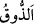
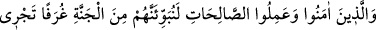
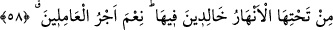

Bazıları demiştir ki: “
(tadmak)” kelimesinin asıl anlamı; az bir şeyi ağıza almak
ve tatmaktır. Buna göre mânâ şudur: Nefislerin bedenle ilişkisinin yok olması, ölüm için
kâfîdir. Bil ki, insana âid bir ruh, bir beden ve bir de bu ikisi arasında “hayvânî ruh”
denilen lâtif bir buhâr (canlılık) vardır. Bu, ruhla beden arasındaki ilişkiyi sağladığı
müddetçe hayat devam eder. Canlılığını yitirince ve onun fonksiyonu yok olunca hayat
da biter; bu durumda ruh, bedenden zarûrî olarak ayrılır. İşte buna sûrî (şeklî) ölüm
denir. Ruhun, ölüm anında bedenden çıkışını ve ayrılışını tam insilâh ehlinden başkası
bilemez.
“Sonunda bize” yâni bizim hükmümüze, cezâ ve mükâfâtımıza “döndürüleceksiniz.”
İşte âkıbeti böyle olan kimse, o gün için çalışmalı, azıklanmalı ve hazırlanmalıdır.
Böyle kimseye hicret etmek ve gurbete katlanmak kolay gelir. Bu, şirk diyarında yaşayan
kimsenin hâlidir. Günah ve bidatların işlendiği yerlerde yaşayanlar da böyledir. Onlar
bu kötülüklere mâni olamıyorlarsa, Allah’a itâat eden kimselerin yaşadığı yerlere hicret
etmelidirler; Zira Allah’ın arzı geniştir.
Sefere çık, hicret eyle çünkü yerin çirkin olacak
Bu yerden diğer tarafa gitmek ar değildir
Eğer yer sana dar gelir, seni sıkarsa
Cihanın Yaratıcısının dünyası dar değildir
58. Îman edip güzel işler yapanları, (evet) muhakkak ki onları, içinde ebedî
kalmak üzere altlarından ırmaklar akan cennet köşklerine yerleştireceğiz. (Böyle
iyi) işler yapanların mükâfatı ne güzeldir!
“Îman edip güzel işler yapanları, -ki, din uğrunda hicret de bunlardandır- (evet)
muhakkak ki onları, içinde ebedî kalmak üzere altlarından ırmaklar akan cennet
köşklerine” yâni inci, yâkût ve zümrüdden yapılmış odalara, köşk ve kasırlara
“yerleştireceğiz.” Bu şekilde tasvir edilmesinin sebebi, cennetin yüksekte, cehennemin
ise onun aşağısında olmasıdır. Ayrıca yüksek kasırlardan aşağılardaki nehirlere ve
yeşilliklere bakmak daha zevkli ve daha çok keyif vericidir. Ve onlar orada ebedî
kalırlar.
“(Böyle iyi) işler yapanların mükâfâtı ne güzeldir!” Yâni, iyi amel işleyenlerin
amellerine karşılık olarak cennet köşkleri ne güzel bir ücrettir!